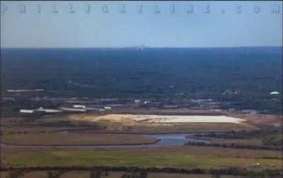

Flat Earth evidence

In a 19th century French experiment by M. M. Biot and Arago a powerful lamp with good reflectors was placed on the summit of Desierto las Palmas in Spain and able to be seen all the way from Camprey on the Island of Iviza. Since the elevation of the two points were identical and the distance between covered nearly 100 miles, if Earth were a ball 25,000 miles in circumference, the light should have been more than 6600 feet, a mile and a quarter, below the line of sight!
The Lieutenant-Colonel Portlock experiment used oxy-hydrogen Drummond’s lights and heliostats to reflect the sun’s rays across stations set up across 108 miles of St. George’s Channel. If the Earth were actually a ball 25,000 miles in circumference, Portlock’s light should have remained hidden under a mile and a half of curvature.
The Michelson-Morley and Sagnac experiments attempted to measure the change in speed of light due to Earth’s assumed motion through space. After measuring in every possible different direction in various locations they failed to detect any significant change whatsoever, again proving the stationary geocentric model.
Heliocentrics believe the rotation of the earth drags the entire lower-atmosphere of the Earth in perfect synchronization up to some undetermined height where this progressively faster spinning atmosphere gives way to the non-spinning, non-gravitized, non-atmosphere of infinite vacuum space. Such non-sensical theories are debunked, however, by rain, fireworks, birds, bugs, clouds, smoke, planes and projectiles all of which would behave very differently if both the ball-Earth and its atmosphere were constantly spinning Eastwards at 1000mph.
If Earth were truly constantly spinning Eastwards at over 1000mph, vertically-fired cannonballs and other projectiles should fall significantly due west. In actual fact, however, whenever this has been tested, vertically-fired cannonballs shoot upwards an average of 14 seconds ascending, 14 seconds descending, and fall back to the ground no more than 2 feet away from the cannon, often directly back into the muzzle.
Ship captains in navigating great distances at sea never need to factor the supposed curvature of the Earth into their calculations. Both Plane Sailing and Great Circle Sailing, the most popular navigation methods, use plane, not spherical trigonometry, making all mathematical calculations on the assumption that the Earth is perfectly flat. If the Earth were in fact a sphere, such an errant assumption would lead to constant glaring inaccuracies. Plane Sailing has worked perfectly fine in both theory and practice for thousands of years, however, and plane trigonometry has time and again proven more accurate than spherical trigonometry in determining distances across the oceans.
During Captain James Clark Ross’s voyages around the Antarctic circumference, he often wrote in his journal perplexed at how they routinely found themselves out of accordance with their charts, stating that they found themselves an average of 12-16 miles outside their reckoning every day, later on further south as much as 29 miles.
Lieutenant Charles Wilkes commanded a United States Navy exploration expedition to the Antarctic from 1838 to 1842, and in his journals also mentioned being consistently east of his reckoning, sometimes over 20 miles in less than 18 hours.
To quote Reverend Thomas Milner, “In the southern hemisphere, navigators to India have often fancied themselves east of the Cape when still west, and have been driven ashore on the African coast, which, according to their reckoning, lay behind them. This misfortune happened to a fine frigate, the Challenger, in 1845. How came Her Majesty’s Ship ‘Conqueror’, to be lost? How have so many other noble vessels, perfectly sound, perfectly manned, perfectly navigated, been wrecked in calm weather, not only in dark night, or in a fog, but in broad daylight and sunshine - in the former case upon the coasts, in the latter, upon sunken rocks - from being ‘out of reckoning?’”
In the ball-Earth model Antarctica is an ice continent which covers the bottom of the ball from 78 degrees South latitude to 90 and is therefore not more than 12,000 miles in circumference. Many early explorers including Captian Cook and James Clark Ross, however, in attempting Antarctic circumnavigation took 3 to 4 years and clocked 50-60,000 miles around. The British ship Challenger also made an indirect but complete circumnavigation of Antarctica traversing 69,000 miles. This is entirely inconsistent with the ball model.
Throughout the year, temperatures in the Antarctic vary less than half the amount at comparable Arctic latitudes. The Northern Arctic region enjoys moderately warm summers and manageable winters, whereas the Southern Antarctic region never even warms enough to melt the perpetual snow and ice. On a tilting, wobbling, ball-Earth spinning uniformly around the Sun, Arctic and Antarctic temperatures and seasons should not vary so greatly.
Iceland at 65 degrees North latitude is home to 870 species of native plants and abundant various animal life. Compare this with the Isle of Georgia at just 54 degrees South latitude where there are only 18 species of native plants and animal life is almost non-existent. The same latitude as Canada or England in the North where dense forests of various tall trees abound, the infamous Captain Cook wrote of Georgia that he was unable to find a single shrub large enough to make a toothpick! Cook wrote, “Not a tree was to be seen. The lands which lie to the south are doomed by nature to perpetual frigidness - never to feel the warmth of the sun’s rays; whose horrible and savage aspect I have not words to describe. Even marine life is sparse in certain tracts of vast extent, and the sea-bird is seldom observed flying over such lonely wastes. The contrasts between the limits of organic life in Arctic and Antarctic zones is very remarkable and significant.”
At places of comparable latitude North and South, dawn and dusk happen very differently than they would on a spinning ball, but precisely how they should on a flat Earth. In the North dawn and dusk come slowly and last far longer than in the South where they come and go very quickly. Certain places in the North twilight can last for over an hour while at comparable Southern latitudes within a few minutes the sunlight completely disappears. This is inexplicable on a uniformly spinning, wobbling ball Earth but is exactly what is expected on a flat Earth with the Sun traveling faster, wider circles over the South and slower, narrower circles over the North.
Samuel Rowbotham’s experiments at the Old Bedford Level proved conclusively the canal’s water to be completely flat over a 6 mile stretch. First he stood in the canal with his telescope held 8 inches above the surface of the water, then his friend in a boat with a 5 foot tall flag sailed the 6 miles away. If Earth were a ball 25,000 miles in circumference the 6 mile stretch of water should have comprised an arc exactly 6 feet high in the middle, so the entire boat and flag should have ultimately disappeared, when in fact the entire boat and flag remained visible at the same height for the entire journey.

In a second experiment Dr. Rowbotham affixed flags 5 feet high along the shoreline, one at every mile marker. Then using his telescope mounted at 5 feet just behind the first flag looked over the tops of all 6 flags which lined up in a perfectly straight line. If the Earth were a ball 25,000 miles in circumference the flags should have progressively dipped down after the first establishing line of sight, the second would have descended 8 inches, 32 inches for the third, 6 feet for the fourth, 10 feet 8 inches for the fifth, and 16 feet 8 inches for the sixth.
Also Quoting Dr. Rowbotham, “On the shore near Waterloo, a few miles to the north of Liverpool, a good telescope was fixed, at an elevation of 6 feet above the water. It was directed to a large steamer, just leaving the River Mersey, and sailing out to Dublin. Gradually the mast-head of the receding vessel came nearer to the horizon, until, at length, after more than four hours had elapsed, it disappeared. The ordinary rate of sailing of the Dublin steamers was fully eight miles an hour; so that the vessel would be, at least, thirty-two miles distant when the mast-head came to the horizon. The 6 feet of elevation of the telescope would require three miles to be deducted for convexity, which would leave twenty-nine miles, the square of which, multiplied by 8 inches, gives 560 feet; deducting 80 feet for the height of the main-mast, and we find that, according to the doctrine of rotundity, the mast-head of the outward bound steamer should have been 480 feet below the horizon. Many other experiments of this kind have been made upon sea-going steamers, and always with results entirely incompatible with the theory that the earth is a globe.”
The distance across the Irish Sea from the Isle of Man’s Douglas Harbor to Great Orm’s Head in North Wales is 60 miles. If the Earth was a globe then the surface of the water between them would form a 60 mile arc, the center towering 1944 feet higher than the coastlines at either end. It is well-known and easily verifiable, however, that on a clear day, from a modest altitude of 100 feet, the Great Orm’s Head is visible from Douglas Harbor. This would be completely impossible on a globe of 25,000 miles. Assuming the 100 foot altitude causes the horizon to appear approximately 13 miles off, the 47 miles remaining means the Welsh coastline should still fall an impossible 1472 feet below the line of sight.

The Philadelphia skyline is clearly visible from Apple Pie Hill in the New Jersey Pine Barrens 40 miles away. If Earth were a ball 25,000 miles in circumference, factoring in the 205 foot elevation of Apple Pie Hill, the Philly skyline should remain well-hidden beyond 335 feet of curvature.
The New York City skyline is clearly visible from Harriman State Park’s Bear Mountain 60 miles away. If Earth were a ball 25,000 miles in circumference, viewing from Bear Mountain’s 1,283 foot summit, the Pythagorean Theorem determining distance to the horizon being 1.23 times the square root of the height in feet, the NYC skyline should be invisible behind 170 feet of curved Earth.
From Washington’s Rock in New Jersey, at just a 400 foot elevation, it is possible on a clear day to see the skylines of both New York and Philadelphia in opposite directions at the same time covering a total distance of 120 miles! If Earth were a ball 25,000 miles in circumference, both of these skylines should be hidden behind over 800 feet of Earth’s curvature.
It is often possible to see the Chicago skyline from sea-level 60 miles away across Lake Michigan. In 2015 after photographer Joshua Nowicki photographed this phenomenon several news channels quickly claimed his picture to be a “superior mirage,” an atmospheric anomaly caused by temperature inversion. While these certainly do occur, the skyline in question was facing right-side up and clearly seen unlike a hazy illusory mirage, and on a ball-Earth 25,000 miles in circumference should be 2,400 feet below the horizon.
October 16, 1854 the Times newspaper reported the Queen’s visit to Great Grimsby from Hull recording they were able to see the 300 foot tall dock tower from 70 miles away. On a ball-Earth 25,000 miles in circumference, factoring their 10 foot elevation above the water and the tower’s 300 foot height, at 70 miles away the dock tower should have remained an entire 2,600 feet below the horizon.
In 1872 Capt. Gibson and crewmates, sailing the ship “Thomas Wood” from China to London, reported seeing the entirety of St. Helena Island on a clear day from 75 miles away. Factoring in their height during measurement on a ball-Earth 25,000 miles in circumference, it was found the island should have been 3,650 feet below their line of sight.
From Genoa, Italy at a height of just 70 feet above sea-level, the island of Gorgona can often be seen 81 miles away. If Earth were a ball 25,000 miles in circumference, Gorgona should be hidden beyond 3,332 feet of curvature.
From Genoa, Italy at a height of just 70 feet above sea-level, the island of Corsica can often be seen 99 miles away. If Earth were a ball 25,000 miles in circumference, Corsica should fall 5,245 feet, almost an entire mile below the horizon.
From Genoa, Italy 70 feet above sea-level, the island of Capraia 102 miles away can often be seen as well. If Earth were a ball 25,000 miles in circumference, Capraia should always remain hidden behind 5,605 feet, over a mile of supposed curvature.
Ring magnets of the kind found in loudspeakers have a central North pole with the opposite “South” pole actually being all points along the outer circumference. This perfectly demonstrates the magnetism of our flat Earth, whereas the alleged source of magnetism in the ball-Earth model is emitted from a hypothetical molten magnetic core in the center of the ball which they claim conveniently causes both poles to constantly move thus evading independent verification at their two “ceremonial poles.” In reality the deepest drilling operation in history, the Russian Kola Ultradeep, managed to get only 8 miles down, so the entire ball-Earth model taught in schools showing a crust, outer-mantle, inner-mantle, outer-core and inner-core layers are all purely speculation as we have never penetrated through beyond the crust.
Newton also theorized and it is now commonly taught that the Earth’s ocean tides are caused by gravitational lunar attraction. If the Moon is only 2,160 miles in diameter and the Earth 8,000 miles, however, using their own math and “law,” it follows that the Earth is 87 times more massive and therefore the larger object should attract the smaller to it, and not the other way around. If the Earth’s greater gravity is what keeps the Moon in orbit, it is impossible for the Moon’s lesser gravity to supersede the Earth’s gravity, especially at Earth’s sea-level, where its gravitational attraction would even further out-trump the Moon’s. And if the Moon’s gravity truly did supersede the Earth’s causing the tides to be drawn towards it, there should be nothing to stop them from continuing onwards and upwards towards their great attractor.
Furthermore, the velocity and path of the Moon are uniform and should therefore exert a uniform influence on the Earth’s tides, when in actuality the Earth’s tides vary greatly and do not follow the Moon. Earth’s lakes, ponds, marshes and other inland bodies of water also inexplicably remain forever outside the Moon’s gravitational grasp. If “gravity” was truly drawing Earth’s oceans up to it, all lakes, ponds and other bodies of standing water should certainly have tides as well.
It is claimed that the other planets are spheres and so therefore Earth must also be a sphere. Firstly, Earth is a “plane” not a “planet,” so the shape of these “planets” in the sky have no bearing on the shape of the Earth beneath our feet. Secondly, these “planets” have been known for thousands of years around the world as the “wandering stars” since they differ from the other fixed stars in their relative motions only. When looked at with an unprejudiced naked-eye or through a telescope, the fixed and wandering stars appear as luminous discs of light, NOT spherical terra firma. The pictures and videos shown by NASA of spherical terra firma planets are all clearly fake computer-generated images, and NOT photographs.
Heliocentrists’ astronomical figures always sound perfectly precise, but they have historically been notorious for regularly and drastically changing them to suit their various models. For instance, in his time Copernicus calculated the Sun’s distance from Earth to be 3,391,200 miles. The next century Johannes Kepler decided it was actually 12,376,800 miles away. Issac Newton once said, “It matters not whether we reckon it 28 or 54 million miles distant for either would do just as well!” How scientific!? Benjamin Martin calculated between 81 and 82 million miles, Thomas Dilworth claimed 93,726,900 miles, John Hind stated positively 95,298,260 miles, Benjamin Gould said more than 96 million miles, and Christian Mayer thought it was more than 104 million! Flat-Earthers throughout the ages, conversely, have used sextants and plane trigonometry to make such calculations and found the Sun and Moon both to be only about 32 miles in diameter and less than a few thousand miles from Earth.
Amateur balloon footage taken above the clouds has provided stunning visual proof that the Sun cannot be millions of miles away. In several shots you can see a clear hot-spot reflecting on the clouds directly below the Sun’s spotlight-like influence. If the Sun were actually millions of miles away such a small, localized hot-spot could not occur.